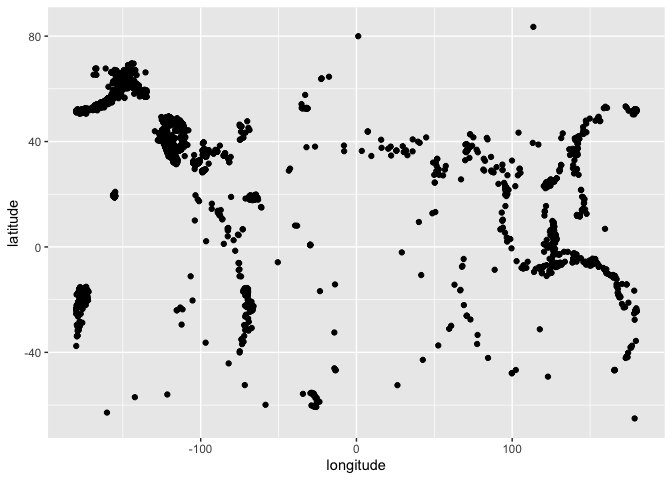

The goal of scrapers is to provide functionality for an easy update of data used throughout the assignments in stat-assignments
Installation
You can install the development version of scrapers like so:
remotes::install_github("stat-assignments/scraper")Example
This is a basic example which shows you how to solve a common problem:
library(scrapers)
library(tidyverse, quietly = TRUE)
#> ── Attaching core tidyverse packages ──────────────────────── tidyverse 2.0.0 ──
#> ✔ dplyr 1.1.4 ✔ readr 2.1.5
#> ✔ forcats 1.0.0 ✔ stringr 1.5.1
#> ✔ ggplot2 3.5.2 ✔ tibble 3.2.1
#> ✔ lubridate 1.9.4 ✔ tidyr 1.3.1
#> ✔ purrr 1.0.4
#> ── Conflicts ────────────────────────────────────────── tidyverse_conflicts() ──
#> ✖ dplyr::filter() masks stats::filter()
#> ✖ dplyr::lag() masks stats::lag()
#> ℹ Use the conflicted package (<http://conflicted.r-lib.org/>) to force all conflicts to become errors
## basic example code
eq <- get_earthquakes(lubridate::today()-30, lubridate::today())
eq %>% ggplot(aes(x = longitude, y = latitude)) + geom_point()
Usage
usage <- data.frame(`function` = "get_earthquake", repo = "data-earthquakes", link="https://github.com/stat-assignments/data-earthquakes")
usage <- usage |> rbind(data.frame(
`function` = "get_earthquake",
repo = "data-earthquakes",
link="https://github.com/stat-assignments/data-earthquakes") )
usage |> knitr::kable()| function. | repo | link |
|---|---|---|
| get_earthquake | data-earthquakes | https://github.com/stat-assignments/data-earthquakes |
| get_earthquake | data-earthquakes | https://github.com/stat-assignments/data-earthquakes |